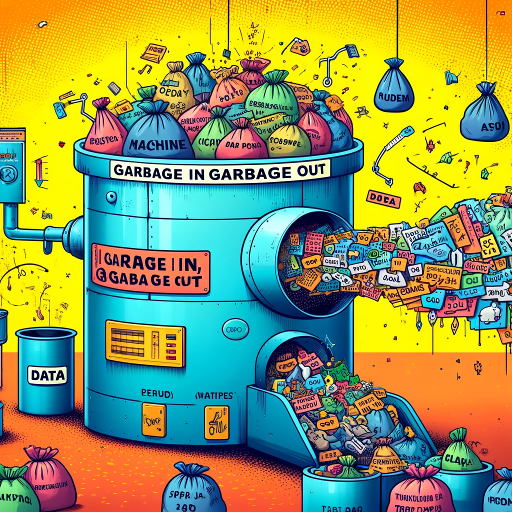

Time Series First Principles Series
This post dives into the second principle of a good time series forecast, garbage in garbage out. Check out the initial post in this series to get a high level view of each principle.
You’re Not a Wizard, Harry
A common I see people in finance make when trying to use machine learning (ML) is around approaching it like a magic wand. Thinking as long as they bring in some data and throw it over the fence to a ML process, a perfect forecast will come back to them. All shiny and clean. ML should be able to find all of the patterns in the data and do things we humans can’t fathom right? No, wrong. ML is not a cure all thing. Having a good ML forecast starts with having quality historical data for a model to learn from. Without good data, you won’t get a good forecast. It’s as simple as that. Let’s dive into ways data can be stinky and how we can sanitize it before training models. To help illustrate each point we’ll use an example of a monthly sales forecast.
Amount of Historical Data
Ideally you want to get as much historical data as possible. If we want to forecast the next quarter of sales, it’s a bad idea to only use the last 12 months of historical data to train a model. Usually I try to get 5+ years of historical data before training any model. This allows for enough year over year observations for a model to learn from. For monthly forecasts, I won’t even start a forecast project if there is less than 3 years of historical data.
Having sufficient historical data creates the opportunity to have sufficient model back testing. Where we can see how models performed over the last few months of the data. We can then use that back testing accuracy as a proxy for what to expect for the future forecast. The less historical data you have, the less you can back test.
The more data you have, the longer you can forecast into the future. If I only have 3 years of historical data, it’s a bad idea to try and forecast the next 2 years. A good heuristic is to cap your forecast horizon (periods you want to forecast out) to less than 50% of the historical data. So if you want to forecast out the next 3 years of monthly sales, you need at least 6 years of historical data. When in doubt always get more data.
What if I have tons of historical monthly sales data, but a cool new feature I want to use around sales pipeline is only available for the last 2 years? Most of the time, stick with using more historical data even if it’s at the expense of using highly correlated features but less historical data. Feel free to try both approaches, but often the one with the most historical data wins.
Trend and Seasonality
Most time series can be broken into three pieces. First is trend, is your data going up or down over time. Second is seasonality, are there peaks and valleys in your data that happen at the same time each year. Finally is the “error” or “residual” component, which is anything left over after accounting for trend and seasonality. Think of it as noise in your data. This approach of breaking down a time series into separate pieces is called time series decomposition.
Having recurring trends and seasonality in your historical data make things 100% easier to forecast in the future. If your data has trends that change month to month and seasonal patterns that evolve over time, your data is basically all noise. A noisy dataset is a bad dataset, one that can’t be modelled effectively by any ML model. Take a look at the below time series, each broken out by trend, seasonality, and residual. Now tell me which one would be easier to train a model on? Which would produce a high quality future forecast?

You can deal with noisy data like this in a few ways. The first is to just change the grain of the data. For example, if this was forecasting a specific product SKU, maybe instead sum it up to a higher level like product category. That way more stable trends and seasonality might appear. You can also try to add features (variables to your training data) to try to teach a model why the seasonality and trends in the data are messy. For example the main COVID years from 2020-2022 really throw a wrench in any trends or seasonal patterns in most data sets. So adding information to a data set that tells a model that there was a special one-off situation for specific periods can help a model learn the right kinds of relationships in the data and generalize well to new unseen data going forward.
Missing Data
Missing data is the silent killer in forecasting. If you don’t specifically look for it you might never know it’s the reason your forecasts perform poorly. Missing data is important because many models (either statistical models or ML models) often need all sequential date observations of the historical data to train a model. Even one period of missing data can throw off an entire model and lead to poor performance.
Often times financial systems will not have tons of missing data. It’s important to know if the data that is missing should mean treated as actually missing or seen as a true zero value. For example, if we have product sales missing for a specific month, should we classify that value as truly missing or just hardcode that value to zero? Make sure you clarify that with whoever owns the data.
If the missing should be zero then that’s a quick fix, but if it’s truly missing then you now have another problem on your hands around what to do. Simply replacing the missing value with zero can throw off any trend or seasonality patters like we discussed earlier. Common ML advice is to replace missing feature data with the median or mean value of that feature, but this is terrible advice for time series forecasting. Usually the best approach is to use some sort of simple statistical model that can understand the trends and patterns of data around the missing value and impute what the value should be. This will keep existing trends and seasonality patterns in the data, meaning your future forecast will be more robust.
Outliers
An outlier in time series forecasting is an atypical data point that significantly deviates from the overall pattern of the data. They can occur multiple times in a historical time series or just be a one off for a particular period. Either way, their presence can greatly impact how a model learns from the data.
Outlier detection in time series forecasting often involves statistical methods, anomaly detection algorithms, or visual inspection to identify data points that significantly deviate from the typical patterns of the series. Techniques include setting thresholds based on standard deviations, using moving averages to smooth the series and highlight anomalies, applying machine learning models like isolation forests, or utilizing robust decomposition methods (like STL) to separate the series into components and identify outliers in the residuals.
Take a look at the chart below. See how just one large value towards the end of the time series completely changes the trend and seasonality. A model might take this data and produce a huge forecast going forward, since the trend changed drastically based on the outlier. It might also have a huge spike for that specific period next year, since it learned that seasonality recently changed.
There are a few ways we can handle the presence of outliers. First we can leave it alone, and let it’s presence impact our future forecast. Maybe after talking with the business domain expert they say that there is a foundational change in the business (new product launch, tax change) that means we expect to see similar values in the future. Second we can add some more information to our data to explain what happened in that period and if we expect it to happen again in the future. If the outlier was caused by a new product launch, we can label that as a feature in the data and also tell the model if we expect any product launches in the future. A model will then learn of these one off patterns and adjust the forecast as needed. The final method is to remove the outlier altogether. Once removed, we can treat it like a missing value and replace it with a value more in line with recent trends and seasonality. If it’s truly a one off thing that will never happen again then removing it is sometimes the best approach. The choice you make always depends on the context of what caused the outlier and how we expect similar things to happen going forward.
Reversal
Sometimes having more historical data is a bad thing, and can hurt model performance. For example having 30 years of historical data could produce a good forecast, but do the trends and patterns of the business 20 years ago still apply to the business today? Often in fast changing industries this is not the case, so sometimes deliberately shortening your data is the right idea. Five years from now we may want to exclude data from pre-2023 to remove all impacts of COVID. How your customers purchased your services in 2019 is most likely very different than how they will buy them in 2024. Gee, thanks COVID.
Automatic Data Cleaning with finnts
Thankfully there is a solution to most of these problems. My package, finnts, helps solve a lot of the data sanitizing needed to produce a high quality forecast. It can handle outliers and missing values automatically for you. It abstracts away all of these hard topics and makes it easy to get up and running with a forecast in one line of code. Check it out.
Final Thoughts
Messy data will always lead to a messy forecast. ML models can’t save you from bad data. There’s no magic wand to cure common data problems. What you can do though is make sure your data has solid historical trends/seasonality, no missing data, and good approach to handling outliers. With these taken care of, you’re own your way to building a high quality forecast.